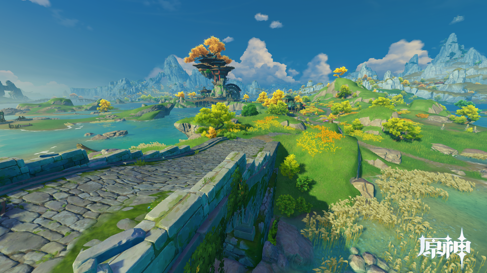
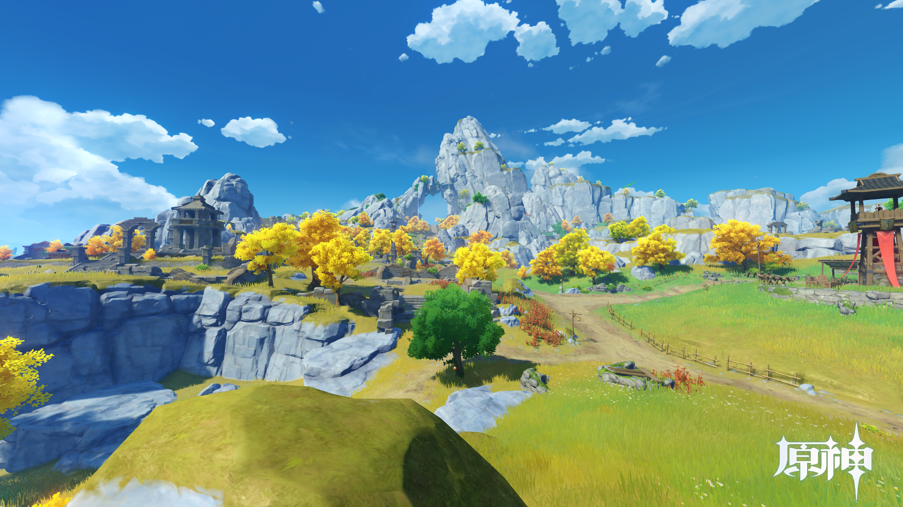
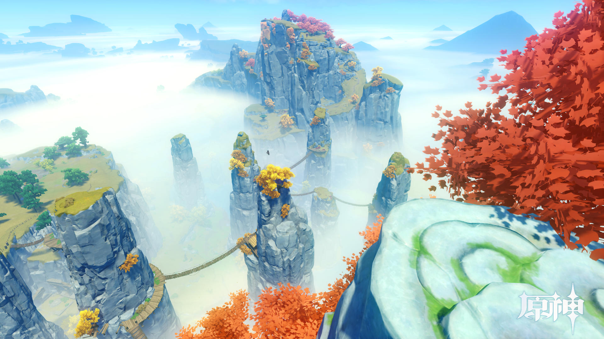

水泽遍布、河网交错纵横，由多样的动植物群落组成了丰富的生态系统，也构成了来往旅客眼中绝佳的景观。
同时，荻花洲也是陆路从蒙德通往璃月的必经要道，因此时常有商队在此歇脚。 建在河滩深处的望舒客栈是这里的标志性建筑。
有记载以来，作为璃月的壁垒经历了数不清的大小战争，因此也可以看到不少古城墙、堡垒和防御工事的遗迹。
传说中璃月人最早的采矿作业亦在此处进行。
山间有奇景，但由于地势复杂、山路陡峭而鲜有人迹，传闻中是守护璃月的仙人们的隐居之处。 也因此受到部分求仙祈福之人的追捧。
鉴于其间的凶险不宜外人靠近，最好还是站在望舒客栈远观吧。
